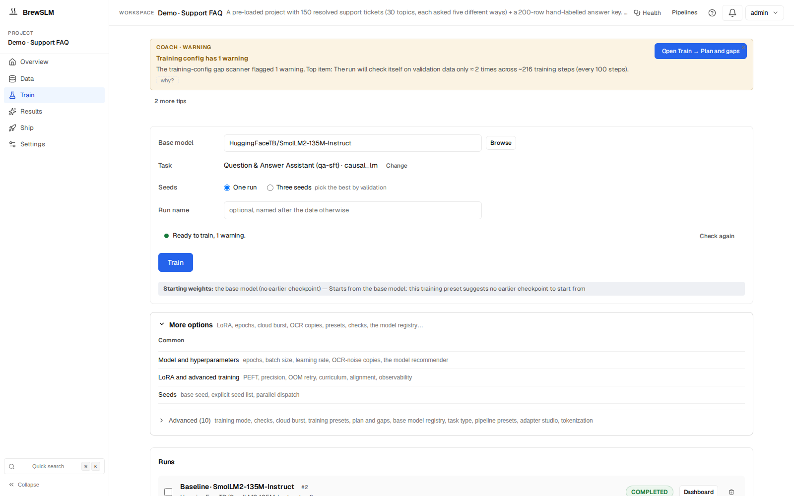

Training defaults, and why they are what they are
What a run gets when you press Train and touch nothing else, where each value lives in the code, and the measurement behind the ones that change with your model or data.
Most of a training config is fixed numbers that we picked once and left alone. A few are not numbers at all: they are rules that look at your base model's size and your longest row after the model loads, then decide. Those rules are where the interesting choices are, so this page spends most of its words on them. Everything here was read from the code at the commit named above; file paths are relative to the BrewSLM repository.
Where you see them
Train asks for four things: the base model, the task, one run or three seeds, and an optional run name. Everything else sits behind More options. Its Common group has three sections: Model and hyperparameters (epochs, batch size, learning rate, OCR-noise copies, the model recommender), LoRA and advanced training (PEFT, precision, OOM retry, curriculum, alignment, observability) and Seeds. Training mode (SFT, continued pretraining, DPO, ORPO), checks, presets and the rest are one level further down, under Advanced.

One detail matters for everything below. While the form is on the profile defaults, it sends only the fields you changed. So the "auto" rules apply unless you overwrite the field. If you type an epoch count, auto epochs turns off for that run, and an old config that names num_epochs keeps training the way it did.
The fixed numbers
| Setting | Default | Where |
|---|---|---|
| Training mode | SFT | backend/app/schemas/training.py:19 |
| Learning rate | 2e-4, cosine schedule, warmup ratio 0.03 | schemas/training.py:63,65,122 |
| Weight decay | 0.01 | scripts/train.py:2163 |
| Batch size × gradient accumulation | 4 × 4 (16 rows per optimizer step) | schemas/training.py:61-62 |
| Max sequence length | 2,048 tokens (allowed 128 to 32,768) | schemas/training.py:100 |
| LoRA rank / alpha / dropout | 16 / 32 / 0.05 | schemas/training.py:128-130 |
| Optimizer | Paged AdamW 8-bit; plain AdamW when bitsandbytes is missing (recorded as optimizer_effective) | scripts/train.py:2918-2926 |
| Save and eval cadence | every 100 steps, keep 3 checkpoints, reload the best at the end | scripts/train.py:2937-2969 |
| Seed | 42, used as both seed and data_seed | schemas/training.py:283 |
None of the first six have a measured rationale in the code. They are the values the wider LoRA community starts from, and we have not found a task where moving them first was the right move. The best checkpoint is picked by validation loss, or by validation accuracy for a classification head. There is an early_stopping_patience field in the schema, but nothing reads it today, so BrewSLM does not stop early. It trains the planned steps and reloads the best checkpoint.
Which layers get LoRA
The target modules default to auto, resolved after the model loads, from its real parameter count (backend/app/services/lora_target_policy.py). A causal language model of 2 billion parameters or fewer gets adapters on every linear layer. A larger one, or one whose size can't be read, gets the query and value projections only. A type you set by hand is never overridden.
We measured that line. On the Support FAQ sample (108 rows, 216 steps, r = 16), query/value-only LoRA left training loss at 3.1, and the model picked up the style of the answers while inventing the facts. Held-out token F1 for SmolLM2-135M across three seeds went from 0.179 / 0.153 with q/v to 0.218 / 0.204 with all-linear. A 1.5B instruct model went from 0.256 / 0.260 to 0.362 / 0.312. All-linear costs about 1.6× the training time and a 5 to 8× larger adapter (74 MB against 20 MB). Above 2B we have measured nothing, so the cheaper choice stays there until we do.
Auto epochs: aim for 200 steps
Epochs are the default most people get wrong on small data. Three epochs of 108 rows at an effective batch of 16 is about 21 optimizer steps, which barely moves a model. Auto epochs (backend/app/services/training_epoch_policy.py) targets 200 optimizer steps instead. It first looks for the largest gradient accumulation that still gives at least 8 steps per epoch and reaches 200 steps within 3 epochs; failing that it drops accumulation to 1. Then it sets epochs to reach 200 steps, capped by the size of the data: at most 4 epochs under 100 rows, 8 under 1,000, and 3 above that.
On the 108-row FAQ sample that gives accumulation 1, 8 epochs and 216 steps. Eval loss fell from 3.69 to 3.16 and held-out F1 rose from 0.12 to 0.18. The earlier default, 9 steps × 5 epochs, moved loss from 3.9 to 3.6 and not much else. Token classification has its own target of about 400 steps (backend/scripts/train_token_classification.py:867), because its head starts from random weights. On our sensitive-data tagger, a flat 3 epochs gave 45 steps and span F1 0.11; sizing to about 400 steps gave 0.91 on the same data.
Memory: checkpointing and micro-batch
Gradient checkpointing is also auto (backend/app/services/gradient_checkpointing_policy.py). It is off when the model has at most 2B parameters and the longest tokenized row is at most 1,024 tokens. It is on for anything bigger, for any row longer than that, and when the size is unknown. The reason it is not simply always on: it costs about 1.6× the time. On our GB10 a default Support FAQ run took 30 seconds with it and 19 without, with identical loss. The reason it is not always off: a 1.5B full fine-tune on rows near 1,000 tokens sat close to 90 GB.
The micro-batch has a similar rule in train.py. If you didn't set a batch size and the longest row is over 1,024 tokens, the batch drops to 1 and accumulation grows to keep the same effective batch. Four rows of 2,048 tokens with a 152k-token vocabulary is a lot of logits; that combination held a LoRA run with checkpointing at 55 GB.
If a run still runs out of memory, the OOM retry planner (on by default, 2 retries) changes one thing per retry, in this order: halve the batch and double accumulation, shrink max length to 75%, turn off sequence packing, turn off flash attention, halve the LoRA rank (never below 4). Each retry is recorded on the run.
Precision and determinism
On a GPU with bf16 support, a LoRA run loads the frozen base in bf16. A full fine-tune, or any classification head (even under LoRA), loads in fp32 with bf16 autocast. We learned that one the hard way: a DeBERTa sentiment head loaded in bf16 sat at chance (loss 0.69 to 0.65, validation accuracy 0.59) because the updates at a fine-tuning learning rate rounded away. CPU runs use fp32, because emulated bf16 on an AVX2-only CPU took about 230 seconds a step against about 5.
Runs are deterministic by default: torch.use_deterministic_algorithms(True), a pinned cuBLAS workspace and deterministic cuDNN. Without it, the same demo config gave F1 0.2405 on most runs and 0.2216 once, because attention's backward pass sums with atomics. Determinism costs about 1.5× step time (SmolLM2: 10 s to 15 s). If an op has no deterministic kernel, the run retries once without it instead of failing, and says so. Each run writes the seed, the switch, and SHA-256 hashes of the train file, the validation file and the weights into training_report.json.
What the loss is computed on
Single-turn SFT trains on the answer only: prompt tokens are masked to -100, and an end-of-sequence token is appended and never masked. The stock collator did the opposite on both counts when the pad and EOS tokens were the same. Multi-turn chat rows train on assistant turns only, and a row that is too long drops its oldest exchanges first. Rows go through the tokenizer's own chat template by default. Continued pretraining packs documents into full-length blocks and trains on every token, with its own defaults: all-linear LoRA at r = 64, alpha 128, learning rate 1e-4.
What is not here
There is no QLoRA path. Nothing in the backend loads a 4-bit or 8-bit base; the only use of bitsandbytes is the 8-bit optimizer. The Academy teaches QLoRA because it is a useful idea and our memory calculator models it, but BrewSLM won't run it for you. Early stopping, as noted above, is a field without a reader. We would rather say both here than have you find out from a run.
Check it on your own run
Every run writes training_report.json into its output folder. Its runtime_environment block records which rule fired and what it chose: auto_epochs, micro_batch, gradient_checkpointing, lora_target_modules (with the reason) and optimizer_effective, plus retry_history when the OOM planner stepped in. The training jobs lesson covers the run page around it.